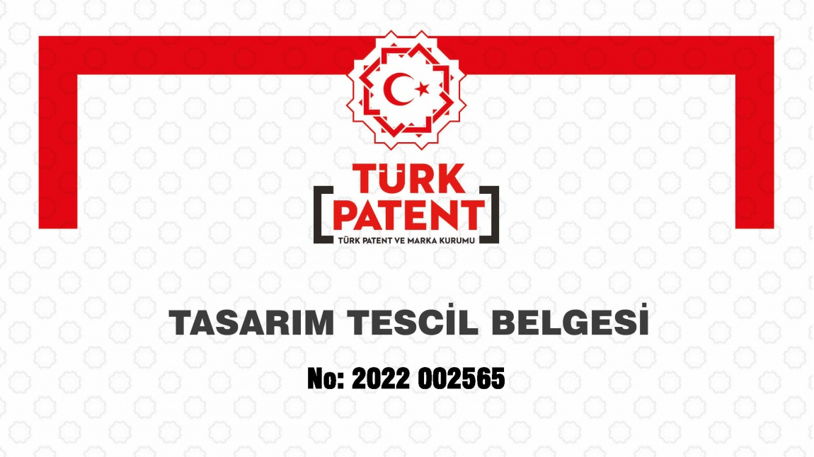

Aslan Teşvik Danışmanlık olarak, yenilikçi fikirlerinizi koruma altına almanız için patent tescil süreçlerinde uzman danışmanlık hizmetleri sunuyoruz. Patent tescili, icatlarınızın yasal koruma
altına alınmasını sağlayarak, bu icatların izinsiz kullanımını önler. Bu süreç, hem bireysel mucitler hem de şirketler için büyük önem taşır çünkü patent tescili, buluşunuzu rakiplerinizden
korur ve ticarileştirilmesini sağlar.

Patent Tescilinin Önemi
Patent tescili, icatlarınız ve yenilikçi fikirleriniz için birçok avantaj sunar:
- Yasal Koruma: Patent tescili, buluşunuzun yasal olarak korunmasını sağlar. Bu, başkalarının sizin
izniniz olmadan buluşunuzu kullanmasını, üretmesini veya satmasını engeller.
- Rekabet Avantajı: Patent, rakiplerinizden korunmanızı sağlar ve pazarda size benzersiz bir konum
kazandırır.
- Ticari Değer: Patentli bir buluş, ticari değer taşır ve lisanslama, satma veya devretme gibi
işlemlerle gelir elde etmenizi sağlar.
- Yatırım Çekme: Patentli bir buluş, yatırımcılar için cazip hale gelir ve yatırım çekme
potansiyelinizi artırır.
- Ar-Ge Teşvikleri: Patentli buluşlar, Ar-Ge teşviklerinden faydalanma imkanı sunar ve yeni
projelerinizi finanse etmenizi sağlar.
Patent Türleri
Patent tescili, buluşunuzun türüne göre farklı kategorilere ayrılabilir:
- Faydalı Model: Daha küçük ve pratik buluşlar için verilen koruma türüdür. Patentten daha kısa sürede ve daha düşük maliyetle alınabilir.
- Tasarım Patenti: Bir ürünün estetik veya dış görünüşüne yönelik yapılan yenilikler için verilen korumadır.
- Buluş Patenti: Yenilik, buluş basamağı ve sanayiye uygulanabilirlik kriterlerini karşılayan teknik yenilikler için verilen patent türüdür.
Patent Tescil Süreci
Patent tescil süreci, birkaç aşamadan oluşur:
- Ön Araştırma ve Analiz: Buluşunuzun patentlenebilir olup olmadığını belirlemek için ön araştırma yapılır. Bu aşamada, buluşun yenilik ve buluş basamağı kriterlerini karşılayıp
karşılamadığı değerlendirilir.
- Başvuru Hazırlığı: Patent başvurusu için gerekli belgeler hazırlanır. Bu belgeler arasında buluşun ayrıntılı tanımı, tarifname, istemler ve başvuru ücreti yer alır.
- Başvurunun Yapılması: Gerekli belgeler tamamlandıktan sonra, patent başvurusu Türk Patent ve Marka Kurumu'na yapılır.
- İnceleme ve Yayın: Başvuru, Türk Patent ve Marka Kurumu tarafından incelenir ve uygun bulunması halinde Resmi Patent Bülteni'nde yayınlanır. Bu aşamada, üçüncü şahıslar itirazda
bulunabilir.
- Tescil ve Belge Alımı: İtiraz süresi sona erdikten ve herhangi bir itiraz olmadığında, patent tescil edilir ve patent tescil belgesi alınır. Bu belge, buluşunuzun yasal olarak
korunduğunu gösterir.
Danışmanlık Hizmetlerimiz
Aslan Teşvik Danışmanlık olarak, patent tescil süreçlerinde işletmelere kapsamlı danışmanlık hizmetleri sunuyoruz. Hizmetlerimiz şunları içerir:
- Ön Araştırma: Buluşunuzun patentlenebilirliğini kontrol ederek, tescil edilebilirliğini analiz ediyoruz.
- Başvuru Hazırlığı: Gerekli belgelerin eksiksiz bir şekilde hazırlanmasını sağlıyoruz.
- Başvuru Süreci: Patent tescil başvurunuzu Türk Patent ve Marka Kurumu'na yapıyor ve süreci takip ediyoruz.
- İtiraz Yönetimi: Başvurunuz sırasında oluşabilecek itirazlara karşı hukuki destek sağlıyoruz.
- Belge Alımı ve Takip: Patent tescil belgenizin alınması ve buluşunuzun korunması için gerekli tüm işlemleri yürütüyoruz.
Neden Aslan Teşvik Danışmanlık?
Patent tescil sürecinde profesyonel bir destek almak, sürecin hızlı ve sorunsuz ilerlemesi için önemlidir. Aslan Teşvik Danışmanlık olarak, uzman ekibimizle ihtiyaçlarınıza özel çözümler
sunuyoruz. Patent tescil süreçlerindeki karmaşıklığı sizin için basitleştiriyor ve buluşlarınızın yasal olarak korunmasını sağlıyoruz.
- Deneyim: Patent tescil süreçlerinde yılların deneyimine sahibiz.
- Hız ve Verimlilik: Başvurularınızı en hızlı ve verimli şekilde sonuçlandırıyoruz.
- Kapsamlı Destek: Patent tescil sürecinin her aşamasında yanınızda oluyoruz.
- Bireysel Çözümler: Her işletmenin ihtiyaçlarına özel çözümler sunuyoruz.
Sonuç
Patent tescili, buluşlarınızın yasal olarak korunmasını, ticari değer kazanmasını ve rekabet avantajı elde etmenizi sağlar. Aslan Teşvik Danışmanlık olarak, patent tescil sürecinizi en verimli ve
etkili şekilde yönetiyoruz. Patent tescili hakkında daha fazla bilgi almak ve hizmetlerimizden yararlanmak için bizimle iletişime geçebilirsiniz.